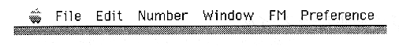
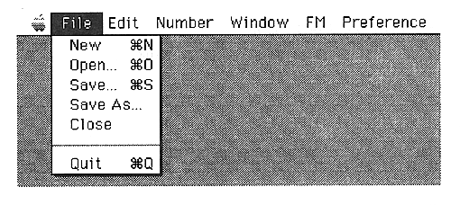
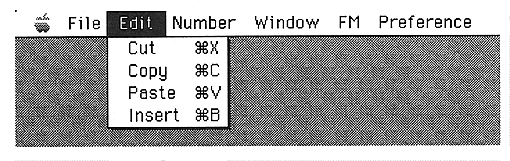

Return to previous page ｜ Return to menu ｜ Go to next page
-
5. Menu overview
- This section introduces the sound editor menu bar and pull-down menu, and the master volume window.
-
Menu bar
The - menu bar has the following menus.

-
Pull-down menu
-
Apple menu
- Same as general Apple menu.
-
File menu

-
Edit menu

Return to previous page ｜ Return to menu ｜ Go to next page